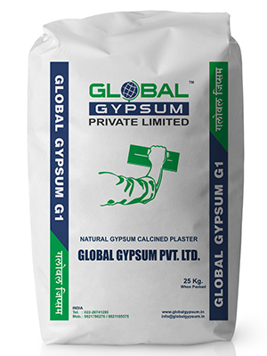

Gypsum G1
Premium One-Coat Gypsum Plaster
Global Gypsum G1, one coat gypsum plaster is a replacement of traditional sand cement plaster and is suitable for application on most internal surfaces including brick, block and concrete. Lightweight aggregates like Vermiculite and special additives are included to enhance coverage, setting time and workability.
Global gypsum G1 can directly replace sand cement plaster in all internal plastering applications, providing smooth and levelled walls.



Premium Application Tool
Benefits & Advantages
- Coverage of 80 Sq meters/MT at 13 mm thickness.
- Eliminates two-step process of Sand Cement Plaster and POP punning.
- Does not require water curing.
- No shrinkage cracks.
- Initial setting time of 15 - 20 minutes.
- Enhanced fire resistance.
- Low thermal conductivity keeps room cooler in summer and warmer in winter.
- Non-combustible (BS:476 Part 4:1970).
- Thermal resistance R = 0.07m2K/W at 13mm thickness.
Technical & Physical Parameters
| Dry Bulk Density | 770 Kg/m3 (Max) |
| Wet Bulk Density | 1.4-1.5 g/cm3 |
| Water To Powder Ratio | 1:1.25 |
| Setting Time | 15-20 Minutes |
Chemical Composition / Packing
Chemical Composition: Calcium Sulphate Hemihydrate: CaS04. 1/2 H2O
Drying Type: Setting
Identification & Packing: Global Gypsum G1 is packed in PP bags with product image, safety instruction, batch number, date of manufacturing, UOM, correspondence address and application instructions.
Available Sizes: 25 Kg
Shelf life time: Approx. 8 months from the date of manufacturing when stored in dry conditions.
Coverage
| Applied Thickness | 13mm |
| Coverage* | 22-25 sq-ft/25 kg bag |
Standard Compliance
IS 2547 (Part I)-1976 for chemical characteristics
IS 2547 (Part II)-1976 for physical characteristics
Mixing instructions
- Global gypsum G1 is pre-mixed with aggregate and only clean water needs to be added.
- Mix in a clean tray or bath; avoid excessive mechanical mixing.
- Tools and water must be clean.
- Contamination from previous mixes shortens setting time and can reduce strength.
- Maintain water to plaster ratio of 1:1.25 by weight.
- Prepare only as much plaster mix as immediately required.
Note: Once the mix has begun to set, additional water must not be added.
Application instructions
- Surfaces must be clean and free from dust and oil residue.
- Do not apply when temperature is below freezing.
- Application of epoxy paint is not recommended.
- Consult paint manufacturer for correct primer on gypsum surfaces.
- Store on level surface, off floor, in dry place protected from weather.
- For interior use only.
Precautions
- For RCC and brick/stone junctions, 145 GSM glass fiber mesh is recommended.
- Not suitable for long continuously damp or severely humid conditions.
Covering Capacity
- 10m2 applied to a thickness of 3mm
- 4m2 applied to a thickness of 5-6mm
- 2m2 applied to a thickness of 13mm